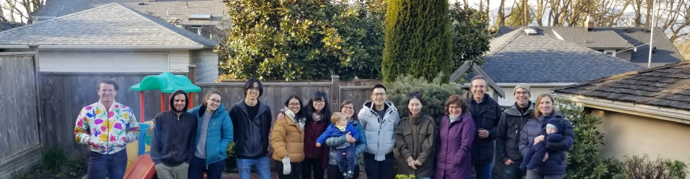

Join the Lab!

Thank you for your interest in joining our lab! I am always happy to hear from students and postdocs interested in our ongoing research activities.
Please contact me by email (sara.knox@ubc.ca) for more details. The deadline for applications in geography is mid-December for MSc students and early January for PhD students, however, I encourage you to contact me well before this deadline. Also, please keep in mind the deadlines for external funding opportunities through NSERC. While graduate student support at UBC is available through teaching assistantships and UBC fellowships, I strongly encourage prospective students to apply for external funding.
Postdoc position available in the lab
Postdoctoral Research Fellow in Wetland Carbon Dynamics
The Micrometeorology research group in the Department of Geography at the University of British Columbia (https://blogs.ubc.ca/saraknox/), in partnership with Ducks Unlimited Canada, is seeking a Postdoctoral Fellow (PDF) for a project focused on the role of Canada’s wetlands in climate change mitigation and adaptation.
Project description: With growing interest in wetland management and restoration as a natural climate solution, improved estimates of wetland carbon sequestration and greenhouse (GHG) fluxes across Canadian wetland types are strongly needed. The objective of this partnership is to contribute to an improved understanding of the response of wetland carbon dynamics to management and climate change in key wetland types across Canada. In this project, we focus on wetlands in the Prairie Pothole Region of western Canada and natural and restored tidal wetlands along the Pacific Coast since these ecosystems are understudied relative to other wetland types in Canada, yet they play important roles in carbon cycling and climate regulation. The goal of this collaborative research project is to contribute to an improved understanding of the response of wetland carbon dynamics to management and climate change in key wetland types across Canada, and help inform regional and national climate mitigation strategies and related policy development. Our work also aims to assess the biophysical impacts of wetland restoration and management.
Postdoctoral Position: The successful candidate will be based in Vancouver, Canada and supervised by Dr. Sara Knox at The University of British Columbia. The PDF will also have the opportunity to work with researchers at Ducks Unlimited Canada, and collaborate with other research groups at UBC and other Canadian Universities. Responsibilities include original scientific research, mentoring graduate and undergraduate students, and manuscript preparation. Specifically, the PDF will assist with the maintenance of multiple eddy covariance flux tower sites and the set up of a new flux tower site, processing eddy covariance data from a subset of sites, conducting original research using data collected from these towers, and publishing peer-reviewed manuscripts. The PDF will also develop professional skills such as collaboration and communication by participating in biweekly to monthly meetings with Ducks Unlimited Canada collaborators and by presenting research at national and international scientific conferences.
Salary: $65,000/year + benefits (see https://hr.ubc.ca/benefits for benefits details). The initial hiring is for one year with a second-year contingent on acceptable performance.
Postdoctoral QualificationsEssential Qualifications
- A PhD in atmospheric science or a strongly related natural science field;
- A strong quantitative (including programming skills in R and/or Python and/or Matlab) and technical background;
- Experience with installing and maintaining eddy covariance flux towers, and with processing eddy covariance data (e.g., using EddyPro or in-house software);
- A proven record of scientific publications in peer-reviewed journals;
- Time management skills, including the ability to meet project goals in a timely manner, and follow through on projects to completion;
- Interpersonal and communication skills, the ability to work both independently and collaboratively;
- Be within 5 years of being awarded the PhD (this is a UBC requirement)
- Experience working in wetland ecosystems
- Experience with biogeochemical modeling
- A valid driver’s license
- A one-page cover letter explaining your motivation for applying for this position; how your prior research experience qualifies you for the position; your mentoring experience; and evidence of your commitment to equity, diversity and inclusion (EDI);
- A CV (including publication list and clear specification of relevant quantitative skills);
- Names and contact details for three references;
Review of applications will begin on Feb. 15, and applicants must be available to start the position between March – June 2023.
Receipt of your application will be confirmed by email but only applicants selected for an interview will be contacted. Once contacted for an interview, please let us know if you require an accommodation, and we will endeavour to make arrangements.
Equity and diversity are essential to academic excellence. An open and diverse community fosters the inclusion of voices that have been underrepresented or discouraged. We encourage applications from members of groups that have been marginalized on any grounds enumerated under the B.C. Human Rights Code, including sex, sexual orientation, gender identity or expression, racialization, disability, political belief, religion, marital or family status, age, and/or status as a First Nation, Métis, Inuit, or Indigenous person. We understand that career paths vary. Legitimate career interruptions will in no way prejudice the assessment process and their impact will be carefully considered. All qualified candidates are encouraged to apply; however, Canadians and permanent residents will be given priority.